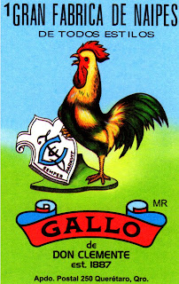

Regresar
 “Más preciso que el reloj, te despierta el madrugador".
El gallo es un animal que representa la fuerza
y la lucha. Los gallos son comúnmente
utilizados en los palenques de México para
las famosas peleas de gallo.